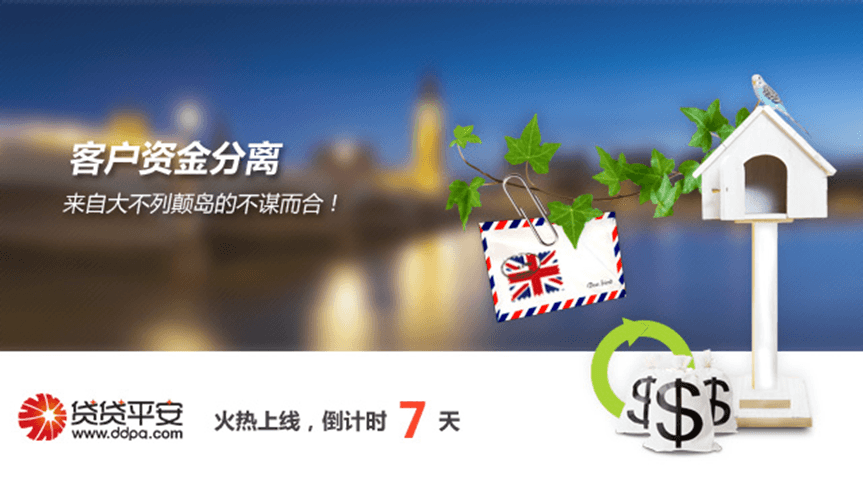

作为P2P行业的发源地——英国，对行业的态度无疑一直是支持、理解、并十分在意的。因此，英国已经于2013草拟出了针对P2P行业的法规，并于2014年4月正式生效并启用，是全球第一部P2P行业法案。
事实上，这个过程相当有趣，在没有出台P2P法律之前，除了遵循消费者法案，政府对于行业的法规可以说是空白的。2011年由英国3家领头P2P借贷公司Zopa，RateSetter,FundingCircle自行成立的行业自律协会P2PFA，并主动找到英国政府，申请成为合法组织，请政府对其监管。经过审核，政府认可其合法性并要求P2P行业在遵守政府相关法律、规则的同时，也要严格遵守P2PFA所制定的包括对P2P借贷公司的规模、风险管理手段、合法性、网络平台建设等共十项运营法则。
值得注意的是，在这十项规定中的第3条——“客户资金分离”的核心思想正好与贷贷平安的运营规则不谋而合！
为了保障所有理财人的账户收益，贷贷平安在过去的一年半里，在设计账户系统的时候，就考虑到了账户分离，设立平台运营、平台收益和风险备用金三大独立对公银行账户，任何人都可掌握风险备用金动向，由银行管理三大对公银行账户资金，每笔明细规范操作并严格限制资金挪用。
这次与大不列颠岛的法案不谋而合，我们更愿意相信对于贷贷平安来说是一份肯定，肯定了平台建设之初我们的团队心怀用户的态度，我们也承诺会秉承着这种态度与您一直走下去。